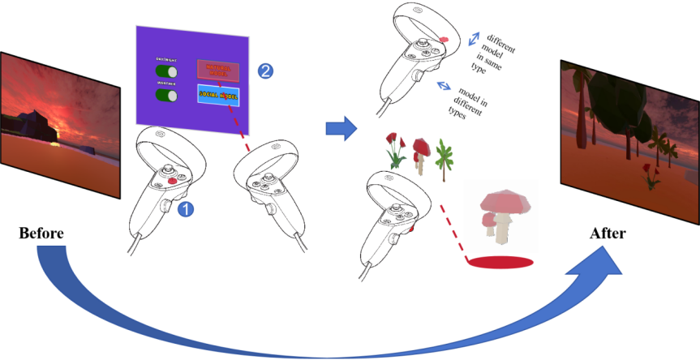

Project 1: VR Teleoperation with Post-Processing.
In the field of video games, post-processing effects are widely used to direct players' attention. Similarly, automotive electronic displays, post-processing effects help highlight critical real-world markers and obstacles for the user. These applications intuitively guide users' attention towards essential information. However, in the field of VR-based teleoperation, such as DJI's unmanned air vehicles (UAVs), assistance for obstacle avoidance typically relies on audio alerts and graphical indicators. Compared to post-processing effects, these methods are less intuitive and can increase the user's cognitive load. My team and I aim to integrate post-processing effects with VR-based teleoperation system. By leveraging these effects, users may naturally focus on obstacles within the remote view, thereby enhancing the obstacle avoidance experience in teleoperation task.

The above three post-processing effects are designed along the following ideas:
- Edge Enhancement: Use the red mask to draw the user's attention to the near objects, and the yellow color to enhance the details of the near objects' outlines.
- Depth-of-field: Use Gaussian blur to make the far objects unclear, so that the near objects are relatively clear, which leads the user to focus on the near objects.
- Color Mask: Use the red mask to indicate that the user should try to pay attention to actions in the red area, and use the blue color to indicate that the user has a relatively safe area.
Project 2: Design an Vitual Reality Diary for emotional regulation.
The main objective of this study was to investigate whether the digital self-harm community can respond positively to the medium of virtual reality and whether they would consider the Virtual Reality to be an effective social support tool for them. We designed a VR-based social interaction platform that encourages users to visualize their feelings for the purpose of self-disclosure and connecting with other users, a design that builds on the interaction mechanisms of the original group's online community and may help them to accomplish their goal of obtaining social support while at the same time circumventing negative influences.